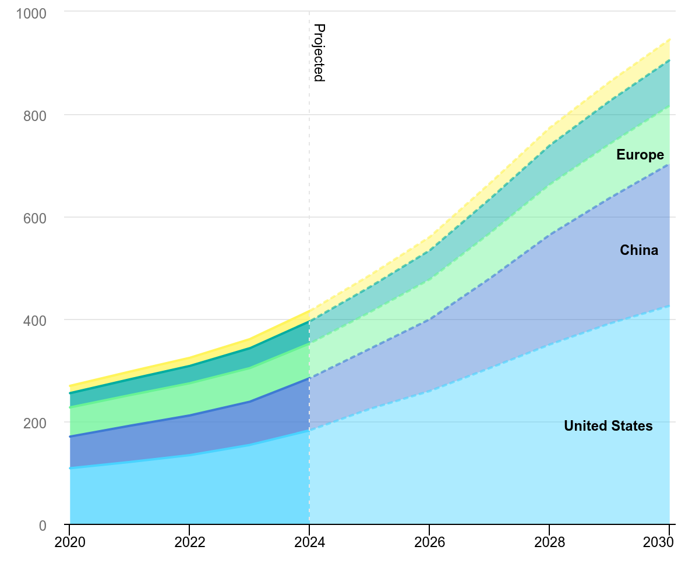
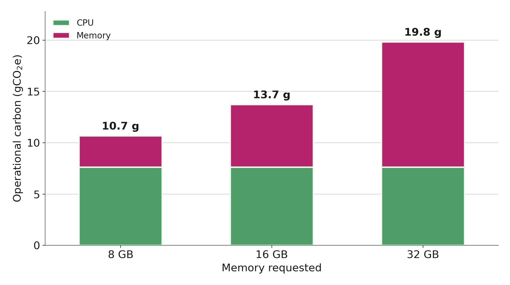
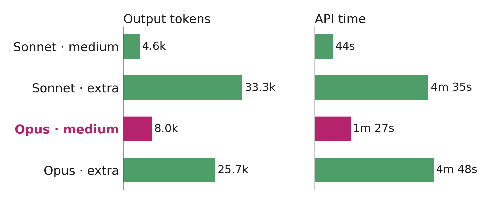

A gentle introduction for researchers
Branwen Snelling — The Francis Crick Institute
Computing is now central to almost every area of research and it is energy intensive.
The carbon footprint of a scientist is estimated to be
4 – 25 t CO2e
per scientist, per year
compared with the < 2 t CO2e per person per year budget consistent with the IPCC's targets
~1.5%
of global electricity consumption
set to more than double by 2030, driven largely by demand from AI

TWh, stacked: United States China Europe Asia excluding China Rest of world
IEA (2025), Data centre electricity consumption by region, Base Case, 2020–2030, IEA, Paris. Licence: CC BY 4.0
The carbon footprint of computing has two parts:
As users of a shared HPC system, procurement and hardware lifetime are largely out of our hands.
Operational carbon is where our day-to-day choices make a difference, so it is the focus of the rest of this talk.
The energy used by a computation comes from multiple sources:
\[ \text{carbon} = \text{energy used} \times \text{carbon intensity of the electricity} \]
Getting the same science done with less energy.
cProfile)
The same 4-hour, 1-core job in the UK with increasing memory requested. Estimated with the Green Algorithms calculator (v3.1).

The same code review in Claude Code at different model and reasoning-effort settings. Inference impact isn't disclosed, so token usage is used as a proxy.
The best review came from Opus at medium effort — more effort cost 3–7× the tokens without a better result.
The carbon intensity of the electricity grid (gCO2/kWh) depends on the mix of generation at that moment.
In the UK it varies both in time (time of day, weather, season) and space (between regions).
Live map: carbonintensity.org.uk
Think about sustainability across the whole life of a project:
minimise what we run
run it efficiently, once
tidy, document, share
Think about how you can minimise resource usage before you start.
seff <jobid> to check theseSlurm lets you delay when a job becomes eligible to run:
# eligible to start two hours from now
sbatch --begin=now+2hours myscript.sh
# eligible to start overnight
sbatch --begin=23:00 myscript.sh
Note: the job only joins the queue once the start time has passed, so it may not start exactly then.
Check the forecast at carbonintensity.org.uk to pick a greener window.
Data storage is not free:
1 TB ≈ 10 kg CO2e per year
The Green Digital Sustainability Certification is an open-access scheme for research institutions to track and mitigate the impact of their computing
The scheme has three levels (bronze, silver, and gold) and you can apply for certification at the research group level